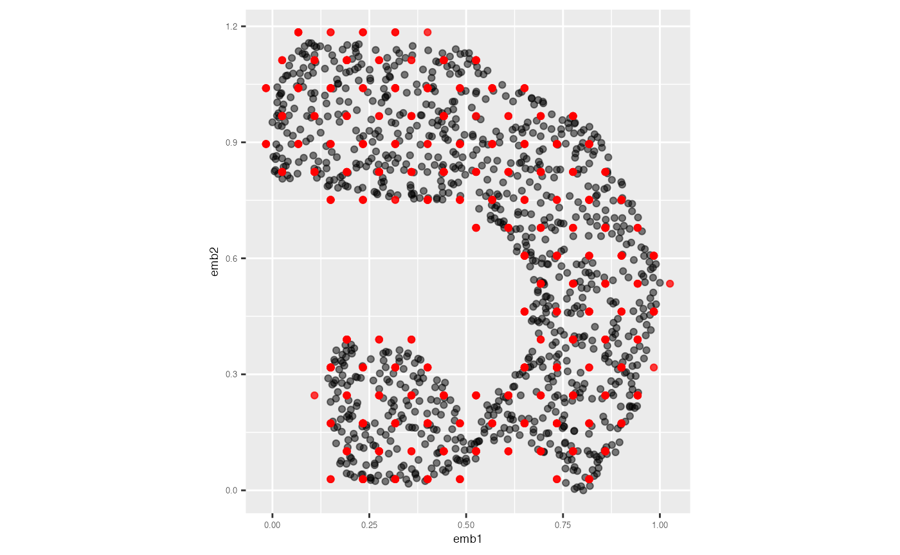

This demonstrates how to generate and inspect model summaries. Summarising models fitted to both the high-dimensional space and its corresponding 2-D embedding is an essential step in evaluating how well a low-dimensional representation captures the structure of the original data.
Step 1: Fitting the model
Begin by fitting a high-dimensional model and its corresponding 2-D
model using the fit_highd_model() function. This generates
the 2-D bin centroids (the 2-D model) and their corresponding
coordinates in the high-dimensional space (the lifted model).
model <- fit_highd_model(
highd_data = scurve,
nldr_data = scurve_umap,
b1 = 21,
q = 0.1,
hd_thresh = 0
)
df_bin_centroids <- model$model_2d
df_bin <- model$model_highdStep 2: Predicting 2-D embedding for data
To evaluate model fit, you can predict the 2-D embedding for each observation in the original high-dimensional dataset.
pred_df_training <- predict_emb(
highd_data = scurve,
model_highd = scurve_model_obj$model_highd,
model_2d = scurve_model_obj$model_2d
)
glimpse(pred_df_training)
#> Rows: 1,000
#> Columns: 4
#> $ pred_emb_1 <dbl> 0.2336432, 0.6924026, 0.7758134, 0.1919378, 0.1919378, 0.56…
#> $ pred_emb_2 <dbl> 0.8956221, 0.5344427, 0.3899710, 0.9678579, 0.9678579, 1.04…
#> $ ID <int> 1, 2, 3, 4, 5, 6, 7, 8, 9, 10, 11, 12, 13, 14, 15, 16, 17, …
#> $ pred_h <int> 215, 145, 116, 229, 229, 249, 79, 164, 206, 118, 162, 50, 8…Visualising predictions
The plot below shows the original UMAP embedding of the training data in grey, overlaid with the predicted 2-D coordinates in red.
umap_scaled <- scurve_model_obj$nldr_scaled_obj$scaled_nldr
umap_scaled |>
ggplot(aes(x = emb1, y = emb2, label = ID)) +
geom_point(alpha = 0.5) +
geom_point(data = pred_df_training, aes(x = pred_emb_1, y = pred_emb_2),
color = "red", alpha = 0.5) +
coord_equal() +
theme(
plot.title = element_text(hjust = 0.5, size = 18, face = "bold"),
axis.text = element_text(size = 5),
axis.title = element_text(size = 7)
)
Step 3: Computing model summaries
Use the glance() function to compute summary statistics
that describe how well the 2-D model captures structure in the
high-dimensional space.
glance(
x = scurve_model_obj,
highd_data = scurve
)
#> # A tibble: 1 × 2
#> Error HBE
#> <dbl> <dbl>
#> 1 265. 0.157Step 4: Augmenting the dataset
To obtain a detailed data frame that includes the high-dimensional
observations, their assigned bins, predicted embeddings, and summary
metrics, use the augment() function:
augment(
x = scurve_model_obj,
highd_data = scurve
) |>
head(5)
#> # A tibble: 5 × 32
#> ID x1 x2 x3 x4 x5 x6 x7 pred_h
#> <int> <dbl> <dbl> <dbl> <dbl> <dbl> <dbl> <dbl> <int>
#> 1 1 -0.120 0.819 -1.99 0.0114 0.00351 0.0334 0.00638 215
#> 2 2 -0.0492 0.166 0.00121 0.0115 -0.0166 -0.0297 0.00509 145
#> 3 3 -0.774 0.651 0.367 -0.0172 0.00600 0.0211 0.00303 116
#> 4 4 -0.606 0.952 -1.80 0.0157 -0.00978 -0.0590 -0.00754 229
#> 5 5 -0.478 1.10 -1.88 -0.00423 0.00495 -0.0482 -0.00982 229
#> # ℹ 23 more variables: model_high_d_x1 <dbl>, model_high_d_x2 <dbl>,
#> # model_high_d_x3 <dbl>, model_high_d_x4 <dbl>, model_high_d_x5 <dbl>,
#> # model_high_d_x6 <dbl>, model_high_d_x7 <dbl>, error_square_x1 <dbl>,
#> # error_square_x2 <dbl>, error_square_x3 <dbl>, error_square_x4 <dbl>,
#> # error_square_x5 <dbl>, error_square_x6 <dbl>, error_square_x7 <dbl>,
#> # row_wise_total_error <dbl>, abs_error_x1 <dbl>, abs_error_x2 <dbl>,
#> # abs_error_x3 <dbl>, abs_error_x4 <dbl>, abs_error_x5 <dbl>, …